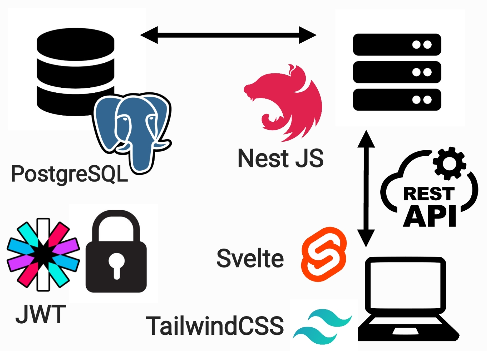

Jeu Mots croisés
- pok
- Nicolas BERT
- Jean-Baptiste DURAND
Mon site chez moi (POK-Temps 1)
Liens GitHub
- Front-end : https://github.com/nbert71/mots-croises-front
- Back-end : https://github.com/nbert71/mots-croises-back
Idée de ce POK
L'idée de ce POK est de créer une site contenant une partie frontend, une partie backend qui va communiquer avec le frontend via une API. On ajoutera également une base de données afin de pouvoir stocker les informations.
Dans ce POK nous allons recrée un jeu de ticket à gratter : le jeu de mots croisés. Voici une photo du ticket en question :

Règles du jeu
Nous disposons de 14 cases ? et d’une grille de mots. Derrière chaque case se trouve une lettre qui apparaît dans la grille. A chaque lettre révélée il faut gratter les occurrences de cette lettre dans la grille. Une fois toutes les cases ? grattées, on remporte de l’argent suivant le nombre de mots entièrement reconstitués.
Technologies utilisées
- Front-end : Svelte + TailwindCSS
- Back-end : NestJS
- API : REST
- Moyen d'authentification : JWT (JSON Web Token)
- Base de données : MySQL
Schéma d'entités
On a une relation OneToMany entre User et Game ==> un user peut avoir plusieurs parties alors qu'une partie ne peu avoir qu'un seul player.
Fonctionnalités
Par la suite, le back-end fera appelle à une API de dictionnaire qui répcupèrera une liste de mots et un algorithme s'occupera de générer la grille de mots croisés à partir de cette liste de mots.
Gestion des utilisateurs, avec connexion et gestion de solde.
Objectifs points POK
Ce qu'on a prévu pour le 1er point POK
- Découvrir les framework pour le front : Svelte et TailwindCSS
- Tuto Svelte
- Tuto TailwindCSS
- TailwindCSS avec Svelte : lien 1, lien 2
- Créer une ébauche de front en static
- Créer une page avec des éléments simples
- Créer une page avec différents components
- Commencer à structurer la page du projet
- Component grille
- Component navbar
- Component info utilisateurs
Ce qu'on a fait
- Découverte de Svelte et implémentation de TailwindCSS
- Création des différents composants + interaction (bind des variables, props)
- Style avec TailwindCSS + animations
- Création des différents pages (jeu, login, register)
- Début des tutoriels NestJS + génération du backend et docker compose.
- Réflexion sur le schéma d'entités (On va utiliser MySQL plutot que MongoDB)
Ce qu'on a prévu pour le second point POK
- Découverte plus approfondie de NestJS
- Création des entités (User, Game ...)
- Création des routes associées si on fait une API REST ou bien création + paramétrage du endpoint si on utilise GraphQL
- Connexion du front avec le backend + modifications pour bon fonctionnement + ajout de la connexion et de la sécurité à l'aide des JWT
Si on a le temps : essayer de faire un algo qui génère une grille à partir d'une liste de mots obtenue via une API externe
Ce qu'on a fait à la fin du temps 1
- Création du backend (DB + PHPMyAdmin) le tout fonctionnant avec Docker.
- Création des entités (User et Game)
- Connexion du backend avec la base de données
- Hashage des mots de passe en base de données
- Sécurisation de l'API via JWT (Guard)
- Connexion entre le front et le back avec stockage du token de connexion dans le localStorage
- Ajout de la mécanique de jeu dans le backend
Ce qu'il reste à faire pour le temps 2
- Amélioration du code
- Finitions
- Création de l'algo de génération de grille avec appel à une API externe
- Amélioration de l'environnement Docker
- Création de fixtures ?
- Rédaction de tests unitaires ?
- Début de pipeline ?